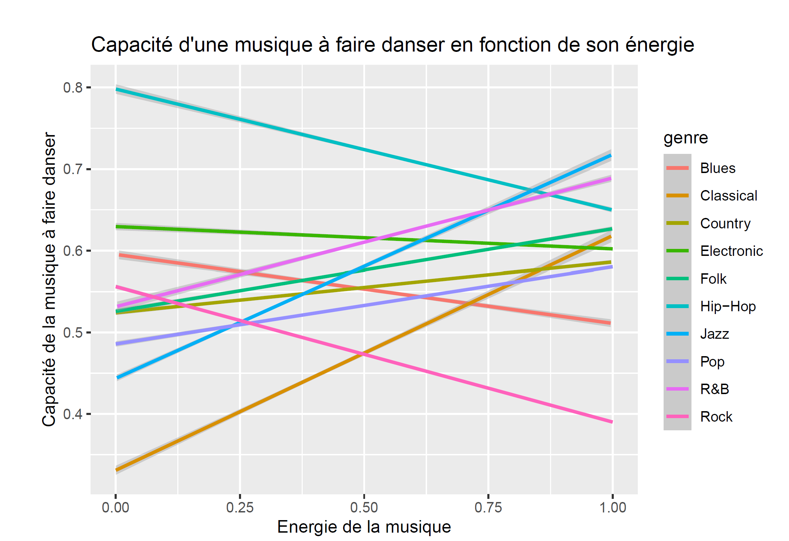

Analyse de la base de données musicales Spotify
Description
Ce projet consistait à faire une étude de la base de données de Spotify. Pour cela, il fallait explorer des données et se poser des questions par rapport au genre musical. Puis nous avons posé une problématique sur l’effet des genres dans la base de Spotify. Nous avons répondu à nos questions dans une analyse avec des tableaux et graphiques à l’aide de RStudio. Pour ce projet, nous nous sommes demandé si les genres étaient uniques et reconnaissables à travers leurs variables. Alors nous avons fait plusieurs graphiques sur les relations entre les genres musicaux en fonction de leur énergie, de leur vitesse de parole, de leur dansabilités et de leur volume sonore ressenti.
Exemple d'un graphique RStudio

Organisation
Nous nous sommes partagé le travail, pour ma part j’ai recherché les meilleures façons de répondre à notre question. J’ai choisi les types de graphiques et je les ai créés. Ma collègue a fait toutes les descriptions, a justifié tous nos choix et a mis tout en forme.
Compétences acquises
Au cours de ce travail, j’ai développé des compétences dans l’analyse et l’exploitation d’une base de données. J’ai appris à collecter, organiser et analyser les informations afin d’en extraire les éléments les plus pertinents. Ce travail m’a permis de mieux comprendre la structure des données et leur utilisation dans le cadre d’une étude. De plus, ce projet m’a permis d’acquérir des bases dans la programmation des graphiques sur RStudio.
Acces au projet
Conclusion
Ce projet nous a permis de réaliser une étude complète à partir d’une base de données que nous ne connaissions pas. Cette réalisation nous a formés à la rédaction d’une étude sur RStudio, allant de la démonstration jusqu’à la justification.